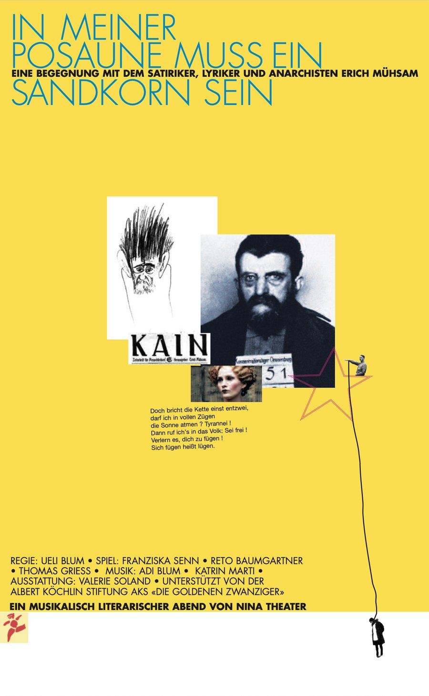
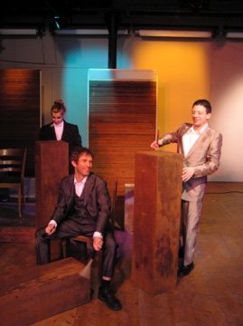
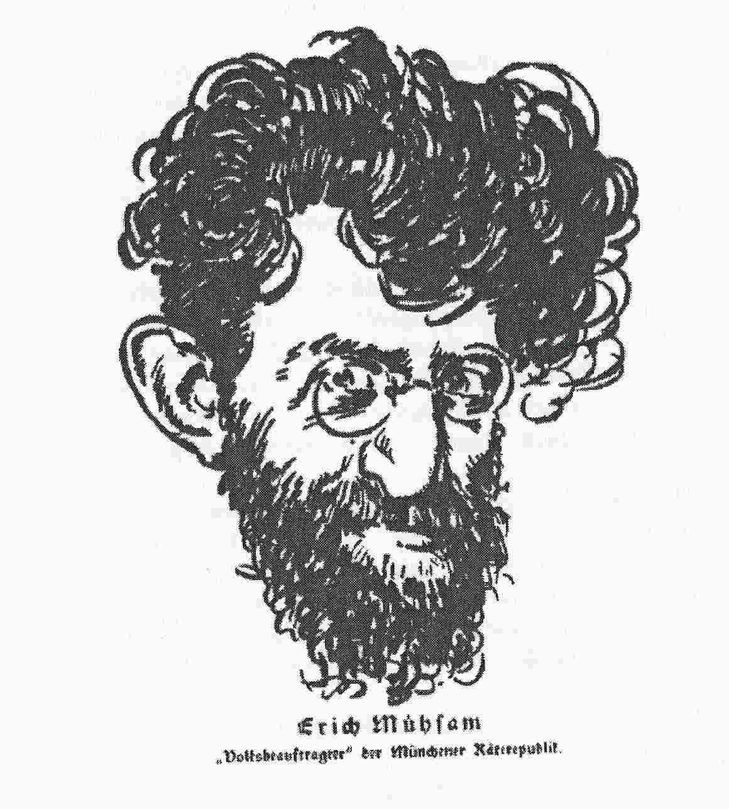

Er war Autor, Bürgerschreck und leidenschaftlicher Agitator – und einer der Ersten, die mit Wortwitz und bissiger Ironie vor dem Nationalsozialismus warnten. «Sich fügen heisst lügen», schrieb Erich Mühsam (1878–1934), der 1934 im Konzentrationslager Oranienburg ermordet wurde.
Der Theaterabend von N!NA rollt den Lebensfaden dieses Unbeugsamen auf: Wortspiele, Schüttelreime und Poeme, Texte aus Tagebüchern, Zeitungen und Briefen zeichnen Mühsams Lebensstationen nach. Musik, Lyrik und Darstellungskunst sind ineinander verwoben – die eigens komponierte Musik spannt den Bogen von der Wandervogelromantik über das Bohèmeleben der Künstler und die Bänkelgesänge der Studenten bis zum Stechschritt der Soldaten. Die drei Schauspieler schlüpfen dabei abwechselnd in die Rolle des deutschen Schriftstellers.
«… eine der bezauberndsten Produktionen der laufenden Saison, berührend und komisch – und sogar lehrreich.» Die Wochenzeitung WOZ, 19.5.2005
«Die Mitwirkenden des NiNA-Theaters haben es vortrefflich verstanden, dem Publikum eine kompakte, kraftvolle Aufführung und einen einfallsreichen, witzig ironischen, in seinem Gehalt jedoch essenziellen Theaterabend zu bescheren.» Anita Lussi, Neue Luzerner Zeitung
- Spiel
- Franziska Senn, Reto Baumgartner, Thomas Griess
- Musik / Komposition
- Adi Blum (Akkordeon), Katrin Marti (Saxophon)
- Regie
- Ueli Blum
- Bühnenbild
- Valérie Soland

